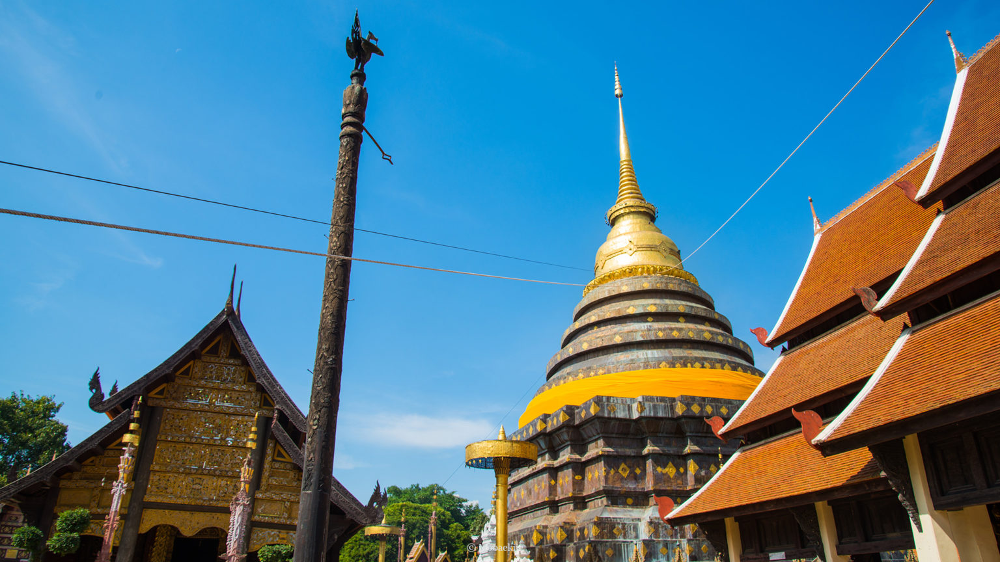
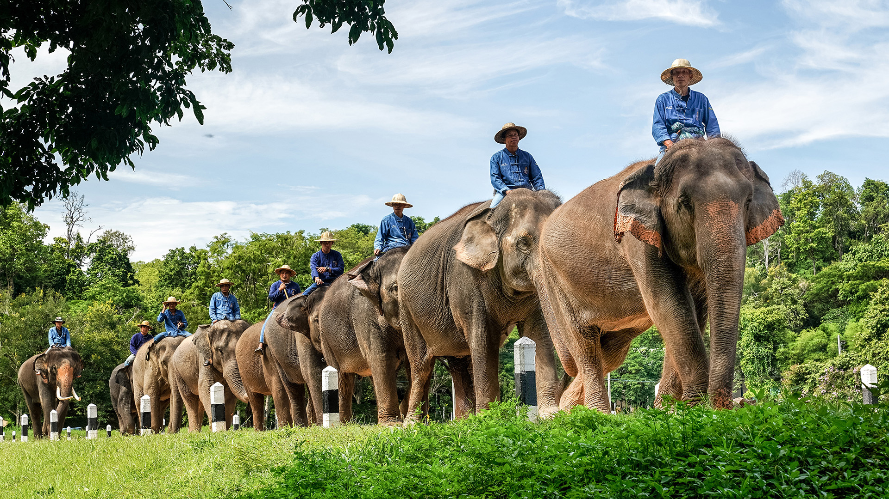

แหล่งท่องเที่ยวยอดนิยม

วัดพระธาตุลำปางหลวง
วัดพระธาตุลำปางหลวงเป็นวัดสำคัญทางประวัติศาสตร์และศิลปะล้านนา เป็นสัญลักษณ์ของจังหวัดลำปาง
อ่านต่อ →ตลาดกาดกองต้า
ตลาดโบราณริมแม่น้ำวังที่มีอายุกว่า 100 ปี เป็นแหล่งรวมอาหารพื้นเมืองและของฝากของจังหวัดลำปาง
อ่านต่อ →

ศูนย์อนุรักษ์ช้างไทย
ศูนย์อนุรักษ์ช้างไทยแห่งชาติ เป็นแหล่งเรียนรู้เกี่ยวกับช้างไทยและการอนุรักษ์ธรรมชาติ
อ่านต่อ →